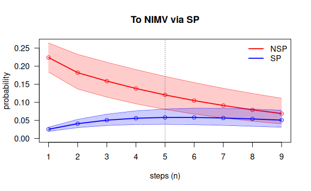

This document is the complete reference for mstate2. The
package implements the methods of Najera-Zuloaga, Besalú and Gómez Melis
(2025) and adds subject-level bootstrap intervals for the predictions.
The document lists every exported function, every S3 method, every
object class and the internal helpers, each with the same structure:
- Definition: the exact signature, with default values.
- What it does: its purpose in one paragraph.
- Arguments: every argument, its default and its meaning.
- Value: what is returned, including every component of the object.
- How it works: the algorithm and formulas.
- Errors and warnings: every condition the function checks.
- Example: an example on the DIVINE cohort.
For a guided analysis that uses all these functions together, see
vignette("mstate2").
Notation and conventions
| Symbol | Meaning |
|---|---|
| state occupied at discrete time | |
| state at the previous time (), at the current time () and at the next time () | |
| , the 1-step second-order transition probability | |
| number of subjects observed going , arriving in at | |
| number of subjects at risk: in at and in at ; equals | |
| , the -step probability |
Conventions used throughout the package:
-
Tensor layout. Second-order probabilities are
stored in an
array indexed
P[j, l, h]= : rows = state at the current time, columns = state at the next time, slices = state at the previous time. Each sliceP[, , h]is an ordinary transition matrix. -
States by label or index. Arguments
h,j,laccept either state labels or integer positions in the state space. - Steps and time. A prediction of steps starts from , and refers to time .
-
Absorbing states satisfy
P[a, a, h] = 1for everyh. -
Tables and arrays. Data handling uses the tidyverse
(
dplyr,tidyr,purrr,tibble) and every table is returned as a tibble. The tensors and the Chapman–Kolmogorov propagation are plain arrays and matrices, because they are linear algebra.
Example data used in this document
All the examples use the DIVINE cohort of 2076 patients hospitalised
with COVID-19 (Najera-Zuloaga, Besalú and Gómez Melis, 2025). The data
are distributed by the DIVINE project (msm_data/MSM_Data.RData)
and are not included in mstate2. MSM has one
row per patient with the state at admission (inistat: 1 =
NSP, 2 = SP), the days spent in each state and
the 0/1 indicators of discharge and death. The states are non-severe and
severe pneumonia (NSP, SP), non-invasive and
invasive ventilation (NIMV, IMV), recovery
(Recov), discharge (Disch) and death
(Death).
Data preparation
rnd()
Definition
rnd(x)What it does. Rounds numbers to the nearest integer,
sending halves away from zero (0.5 → 1, 2.5 → 3, −0.5 →
−1). It is the default discretisation of sojourn_to_panel()
and the same function, with the same name, that the code of the methods
paper uses to turn the DIVINE sojourn times into days.
Arguments
| Argument | Default | Meaning |
|---|---|---|
x |
— | numeric vector |
Value. A numeric vector of the same length:
trunc(x + sign(x) * 0.5).
How it works. Adding
in the direction of the sign and truncating towards zero. Base R’s
round() instead sends halves to the nearest even
integer (IEC 60559), so round(0.5) = 0 would make a
half-day stay vanish. Only rnd() reproduces Table 2 of the
paper.
Errors and warnings. None.
Example
sojourn_to_panel()
Definition
sojourn_to_panel(data, id, segments, absorbing, round_fun = rnd)What it does. Converts sojourn-time data (one row per subject, with the total time spent in each state and indicators of how follow-up ended) into a discrete-time panel (one row per subject and time unit, with the state occupied).
Arguments
| Argument | Default | Meaning |
|---|---|---|
data |
— | data frame, one row per subject |
id |
— | name of the subject id column |
segments |
— | named character vector,
c(state = "duration column", ...), in visiting
order
|
absorbing |
— | named character vector,
c(state = "0/1 indicator column", ...)
|
round_fun |
rnd |
function used to discretise durations |
Value. A tibble with columns id,
time (0, 1, 2, …) and state (character).
How it works. For each subject:
- The duration columns are put in long format (one row per subject and
state,
tidyr::pivot_longer()) and discretised withround_fun; negative orNAdurations become 0 (“not visited”). - Each state is repeated as many times as its duration
(
tidyr::uncount()), in the order ofsegments. - The first absorbing state whose indicator equals 1 is appended. If none equals 1, the subject is right-censored and has no final absorbing row.
- Times are numbered from 0. Subjects with no duration and no event
contribute no rows. Subjects keep the row order of
data.
This is the discretisation of the paper’s code, which also rounds
each sojourn separately with rnd().
Errors and warnings. Error if data is
not a data frame, or if any column named in id,
segments or absorbing is missing. Warning if a
positive duration rounds to 0 time units: that visit is dropped, and
with it the transitions into and out of it (A → B → C would become A →
C). The warning gives the number of visits lost by state. It never
happens in DIVINE, whose durations are whole or half days.
Caveat. The order of visits and repeated visits
cannot be recovered from sojourn times: the order is imposed by
segments and each state is visited at most once.
Example
panel <- sojourn_to_panel(MSM, id = "id", segments = segs, absorbing = absb)
dim(panel)
#> [1] 27736 3
count(panel, state) # patient-days in each state
#> # A tibble: 7 × 2
#> state n
#> <chr> <int>
#> 1 Death 218
#> 2 Disch 1858
#> 3 IMV 4681
#> 4 NIMV 1019
#> 5 NSP 12432
#> 6 Recov 4228
#> 7 SP 3300Every DIVINE patient ends in Disch or
Death, so no follow-up is censored.
msprep2()
Definition
msprep2(data, id = "id", format = c("auto", "events", "wide", "sojourn", "msdata"),
time = "time", state = "state", times = NULL, status = NULL,
durations = NULL, outcome = NULL, initial = NULL, start = NULL, end = NULL,
unit = 1, round_fun = rnd, recode = NULL, states = NULL, absorbing = NULL,
trans = NULL, ties = c("last", "first"), check = c("warn", "error"), keep = NULL)What it does. Turns multistate data as they
are collected into the daily panel of prep2(), and
reports every record it had to drop or change. It plays the role of
mstate::msprep(), which only takes the wide layout, needs
the transition matrix, works with numeric times and returns the
counting-process format of the Cox model.
Arguments
| Argument | Default | Meaning |
|---|---|---|
data |
— | raw data (a data frame, or an msdata object) |
id |
"id" |
subject id column |
format |
"auto" |
input layout (below); "auto" chooses it from the
arguments given |
time, state
|
"time", "state"
|
events layout: time (or date) and state columns |
times |
NULL |
wide layout: named vector c(state = "time column")
|
status |
NULL |
wide layout: named vector
c(state = "0/1 status column"); times with status 0 are
censoring times, as in msprep()
|
durations |
NULL |
sojourn layout: named vector
c(state = "duration column"), in visiting order |
outcome |
NULL |
sojourn layout: named vector c(state = "0/1 indicator")
of the absorbing states |
initial |
NULL |
state entered at the origin: a column or a single label |
start |
NULL |
origin of time: a column (e.g. admission date) or a value; default the first record (0 for a numeric wide layout) |
end |
NULL |
end of follow-up of subjects not absorbed: a column or a value |
unit |
1 |
length of a time unit: a number, or "hour",
"day", "week", "month",
"year" for dates |
round_fun |
rnd |
discretisation of the elapsed times |
recode |
NULL |
relabelling of the recorded states, c(old = "new")
|
states |
NULL |
state space and order (default from trans, the layout,
or the observed states), or a named list with the time and status
columns of each state |
absorbing |
NULL |
absorbing states; default from trans,
outcome, or the states nobody leaves |
trans |
NULL |
allowed transitions: mstate::transMat() matrix
(NA = not allowed) or a logical/0-1 matrix |
ties |
"last" |
state kept when several fall in the same unit (an absorbing state always wins) |
check |
"warn" |
"error" stops at a transition not allowed by
trans
|
keep |
NULL |
baseline covariates carried into the panel; with conventional names, every other column |
Input layouts
| Layout | One row per | Arguments |
|---|---|---|
events |
subject and recorded state (state changes or repeated observations) |
time, state
|
wide |
subject, one time (and status) column per state |
times, status
|
sojourn |
subject, days spent in each state and indicators of the outcome |
durations, outcome
|
msdata |
subject and possible transition (mstate::msprep()) |
— |
Conventional names. In the wide layout with columns
<state>_time and <state>_status
for every state, inistat (initial state) and
id, no argument is needed: the states are the
<state> prefixes in column order,
inistat is the initial state, every other column is kept as
a covariate, and without id the rows are numbered.
Any column names: a list of states.
states can also be a named list that gives, in order, the
time and status columns of each state:
list(healthy = NULL, ill = c(time = "t_ill", status = "ill"), dead = c(time = "t_dth", status = "dth")).
Each element can be c(time = , status = ) in any order,
c(time_col = "status_col"), two unnamed columns (the 0/1
one is the status), a single time column (no status: visited when its
time is recorded) or NULL (a state only entered as initial
state). The other columns are kept as covariates, as with conventional
names.
Value. An object of class
msm2prep, a list with:
| Component | Content |
|---|---|
panel |
tibble (id, time, state, keep…): one row per subject
and unit, time from the origin, state a factor
with levels states
|
states, absorbing
|
state space and absorbing states |
trans |
logical matrix of allowed transitions, or NULL
|
transitions |
tibble (from, to, n, allowed) with the observed
transitions |
subjects |
tibble with first and last unit, entry and exit state and
status ("absorbed" or "censored")
of each subject |
issues |
tibble (id, issue, state, time, detail): every record
dropped or changed |
settings |
layout, unit and tie rule |
print() shows a short report and summary()
the table of transitions (from × to, as mstate::events()),
the follow-up and the issues by type. prep2() accepts the
object directly.
How it works.
- Each layout is read into the same intermediate form: one record per
subject and recorded state, with its time. Text dates are read with the
formats
2020-03-15,15/03/2020,15-03-2020and2020/03/15; states are relabelled withrecode; theinitialstate is added at the origin. - Times are measured from the subject’s origin in units of
unitand rounded withround_fun. - Records before the origin or after the end of follow-up are dropped.
- In time order, the first absorbing state ends follow-up; later records are dropped.
- When several records fall in the same unit, the last (or first) is kept; an absorbing state is always kept. A different state that loses this way occupies no unit and its transitions are lost.
- Repeated records of the same state are merged (they are observations, not transitions), but still extend follow-up.
- Each state is expanded over the units it occupies: until the unit
before the next state; the last state until the end of follow-up
(
end, the last record, or one unit if absorbing). - The observed transitions are counted and checked against
trans.
Errors and warnings. Error if a column is missing,
if a recorded state is not in states, if the wide or
sojourn layout has duplicated ids, if text times cannot be read as
dates, if unit is a name with numeric times, or if
check = "error" and a transition is not allowed. One
warning gives the number of records dropped or changed, by type:
| Issue | Meaning |
|---|---|
missing |
missing id, time or state (events layout) |
before_start |
record before the origin |
after_end |
record after the end of follow-up |
after_absorbing |
record after the entry into an absorbing state |
same_unit |
another state was kept in the same time unit |
rounded_to_zero |
a positive duration rounds to 0 units (sojourn layout) |
not_allowed |
transition not allowed by trans (kept) |
no_data |
subject with no usable record |
Example
x <- msprep2(MSM, durations = segs, outcome = absb, states = estados)
x
#> <msm2prep> discrete-time panel ready for prep2()
#> layout : sojourn
#> subjects : 2076 (2076 absorbed, 0 censored)
#> panel rows : 27736 (time 0 - 138)
#> states (7) : NSP, SP, Recov, NIMV, IMV, Disch, Death
#> absorbing : Disch, Death
#> transitions : 14 types, 3433 in total
#> issues : none
summary(x)
#> <msm2prep summary>
#>
#> Observed transitions (from rows to columns):
#> to
#> from NSP SP Recov NIMV IMV Disch Death
#> NSP 0 411 0 0 0 1406 38
#> SP 0 0 223 214 166 0 29
#> Recov 0 0 0 0 0 452 12
#> NIMV 0 0 101 0 102 0 11
#> IMV 0 0 140 0 0 0 128
#> Disch 0 0 0 0 0 0 0
#> Death 0 0 0 0 0 0 0
#>
#> Time units of follow-up by status:
#> # A tibble: 1 × 5
#> status subjects min median max
#> <chr> <int> <dbl> <dbl> <dbl>
#> 1 absorbed 2076 2 9 139
#>
#> Records dropped or changed:
#> none
all.equal(x$panel |> mutate(state = as.character(state)), panel) # = sojourn_to_panel()
#> [1] TRUE
prep2()
Definition
prep2(data, id = "id", time = "time", state = "state",
states = NULL, absorbing = NULL, drop.na = FALSE, check.consecutive = TRUE)What it does. Builds the second-order
counting processes
and
from panel data, plus the individual-level table of second-order
triples. Its output is the input of P2est() and
P2boot().
Arguments
| Argument | Default | Meaning |
|---|---|---|
data |
— | panel data frame (one row per subject and time), or an
msm2prep object from msprep2() (its panel,
states and absorbing states are used) |
id, time, state
|
"id", "time", "state"
|
column names |
states |
NULL |
state space and order; default: observed states (factor levels, or sorted values) |
absorbing |
NULL |
absorbing states; default: inferred |
drop.na |
FALSE |
if TRUE, drop rows with NA in
id/time/state with a warning instead of an error |
check.consecutive |
TRUE |
warn when some subject’s times are not consecutive integers |
Value. An object of class
msm2data, a list with:
| Component | Content |
|---|---|
N |
tibble (h, j, l, s, N):
,
= time of the destination |
Y |
tibble (h, j, s, Y):
,
indexed by the same
|
triples |
tibble (id, h, j, l, s): one row per subject per
at-risk instant; used by P2boot() to resample subjects |
states |
the state space, in order |
absorbing |
absorbing states (character) |
n |
number of subjects |
ntriples |
number of triples (rows of triples) |
time.range |
range of observed times |
The columns h, j, l are
factors with levels states.
How it works.
- Validates the columns and
NAs and renames them toid,time,state. Convertsstateto a factor with levelsstates. - Sorts by
(id, time)and, if requested, checks that times within each subject increase by exactly 1. - Within each subject,
h = lag(state, 2)andj = lag(state, 1). The first two rows of each subject (incomplete history) are dropped; the remaining rows are the triples, with the current row’s state asl. -
Ncounts triples by(h, j, l, s)(count());YsumsNoverl. These are the counting processes of Section 2.2 of the paper. With complete follow-up, is exactly the number of subjects in at and at ; a subject whose follow-up stops in (right-censored) is not counted at risk, because its next state is not observed. - If
absorbingisNULL, a state is absorbing when it is occupied but never left ( with never observed).
Why it is done this way. The likelihood of a second-order Markov chain depends on the data only through and (Anderson and Goodman, 1957), so they are computed once and every other function reuses them.
Errors and warnings.
- Error: a column in
id/time/stateis missing. - Error:
NAin id/time/state withdrop.na = FALSE(warning and drop withdrop.na = TRUE). - Error: an observed state is not in
states. - Error: no triples at all (every subject has fewer than 3 observations).
- Warning: non-consecutive times (triples are still formed from consecutive rows).
Example
d <- prep2(panel, states = estados)
d
#> <msm2data> second-order counting processes
#> subjects : 2076
#> observed triples: 23584
#> time range : 0 - 138
#> states (7) : NSP, SP, Recov, NIMV, IMV, Disch, Death
#> absorbing : Disch, Death
#> distinct (h,j) : 12
head(d$N)
#> # A tibble: 6 × 5
#> h j l s N
#> <fct> <fct> <fct> <int> <int>
#> 1 NSP NSP NSP 2 1505
#> 2 NSP NSP NSP 3 1306
#> 3 NSP NSP NSP 4 1147
#> 4 NSP NSP NSP 5 955
#> 5 NSP NSP NSP 6 788
#> 6 NSP NSP NSP 7 610
head(d$Y)
#> # A tibble: 6 × 4
#> h j s Y
#> <fct> <fct> <int> <int>
#> 1 NSP NSP 2 1658
#> 2 NSP NSP 3 1505
#> 3 NSP NSP 4 1306
#> 4 NSP NSP 5 1147
#> 5 NSP NSP 6 955
#> 6 NSP NSP 7 788
names(d$triples) # one row per patient-day at risk (not printed)
#> [1] "id" "h" "j" "l" "s"
print.msm2data() and
summary.msm2data()
Definition
## S3 method for class 'msm2data'
print(x, ...)
## S3 method for class 'msm2data'
summary(object, ...)What they do. print() shows the number
of subjects and triples, time range, states, absorbing states and number
of distinct
pairs. summary() prints and invisibly returns the
exposure per
pair.
Value. print() returns x
invisibly. summary() returns invisibly a tibble with one
row per
and columns total_at_risk
(,
the RPE denominator, in subject-instants), s_min and
s_max.
Example
expo <- summary(d)
#> <msm2data summary>
#> 2076 subjects, 23584 triples, time 0-138
#> exposure per (h, j) pair:
#> # A tibble: 12 × 5
#> h j total_at_risk s_min s_max
#> <fct> <fct> <int> <int> <int>
#> 1 NSP NSP 10577 2 43
#> 2 NSP SP 411 2 37
#> 3 SP SP 2668 2 50
#> 4 SP Recov 223 3 51
#> 5 SP NIMV 214 2 37
#> 6 SP IMV 166 2 38
#> 7 Recov Recov 3764 4 138
#> 8 NIMV Recov 101 3 36
#> 9 NIMV NIMV 805 3 41
#> 10 NIMV IMV 102 3 21
#> 11 IMV Recov 140 4 97
#> 12 IMV IMV 4413 3 96Estimation
P2est()
Definition
What it does. Estimates every observed 1-step second-order transition probability nonparametrically, with standard errors and confidence intervals, with the relative probability estimator (RPE), and arranges them as tensors.
Arguments
| Argument | Default | Meaning |
|---|---|---|
object |
— | an msm2data object |
conf.level |
0.95 |
confidence level, strictly in (0, 1) |
ci |
"wald" |
"wald" or "logit" interval |
clip |
TRUE |
truncate Wald intervals to [0, 1] |
Value. An object of class
P2est, a list with:
| Component | Content |
|---|---|
estimate |
tibble, one row per observed
:
h, j, l, p, se, lower, upper, n.trans, at.risk
|
P |
tensor of estimates, layout [j, l, h] (as in the paper’s
code) |
P.lower, P.upper
|
tensors of the confidence limits |
P.se |
tensor of standard errors |
states, absorbing
|
state space and absorbing states |
estimator (always "RPE"),
conf.level, ci
|
settings used |
n |
number of subjects |
with n.trans
and at.risk
.
How it works.
The estimator is Eq. 9 of the paper; the standard error is
,
with the variance estimator of Theorem 5 (Eq. 14), because
.
The RPE pools all exposure and weighs every subject-instant equally (the
paper shows, Corollary 3, that it is more efficient than the conditional
probability estimator, which is therefore not implemented). Intervals:
Wald
(Corollary 2; clipped if clip, as in the paper’s code), or
logit
,
which degenerates to
when
.
Finally, for every absorbing state
and every
,
P[a, a, h], P.lower[a, a, h] and
P.upper[a, a, h] are set to 1, so that absorbing states
keep their probability mass during propagation. Unobserved
pairs are left at 0, as the paper prescribes when nobody is at risk.
Agreement with the paper’s code. On DIVINE, the 343
entries of P coincide with the tensor of the paper’s
illustration code. The only differences are (i)
is computed exactly (qnorm(0.975) = 1.959964, against 1.96
in the paper’s code), which changes the confidence limits by about
,
and (ii) P[a, a, h] = 1 also for pairs
that never occur (e.g. SP → Disch), which the paper’s code leaves at 0;
those pairs have probability 0 of being reached, so no prediction
changes.
Errors and warnings. Error if object is
not an msm2data or if conf.level is not a
single number strictly between 0 and 1.
Example
fit <- P2est(d)
fit
#> <P2est> RPE estimates of 1-step second-order transition probabilities
#> states: NSP, SP, Recov, NIMV, IMV, Disch, Death
#> 95% wald confidence intervals; 2076 subjects
#> 39 estimated transition probabilities (h -> j -> l)
fit$estimate |> filter(j == "SP") # Table 2 of the paper
#> # A tibble: 10 × 9
#> h j l p se lower upper n.trans at.risk
#> <fct> <fct> <fct> <dbl> <dbl> <dbl> <dbl> <int> <int>
#> 1 NSP SP SP 0.616 0.0240 0.569 0.663 253 411
#> 2 NSP SP Recov 0.00730 0.00420 0 0.0155 3 411
#> 3 NSP SP NIMV 0.224 0.0206 0.184 0.264 92 411
#> 4 NSP SP IMV 0.151 0.0177 0.116 0.185 62 411
#> 5 NSP SP Death 0.00243 0.00243 0 0.00720 1 411
#> 6 SP SP SP 0.865 0.00662 0.852 0.878 2307 2668
#> 7 SP SP Recov 0.0825 0.00533 0.0720 0.0929 220 2668
#> 8 SP SP NIMV 0.0255 0.00305 0.0195 0.0315 68 2668
#> 9 SP SP IMV 0.0184 0.00260 0.0133 0.0235 49 2668
#> 10 SP SP Death 0.00900 0.00183 0.00541 0.0126 24 2668
round(fit$P[, , "NSP"], 3) # transition matrix for patients in NSP at the previous time
#> NSP SP Recov NIMV IMV Disch Death
#> NSP 0.843 0.024 0.000 0.000 0.000 0.129 0.003
#> SP 0.000 0.616 0.007 0.224 0.151 0.000 0.002
#> Recov 0.000 0.000 0.000 0.000 0.000 0.000 0.000
#> NIMV 0.000 0.000 0.000 0.000 0.000 0.000 0.000
#> IMV 0.000 0.000 0.000 0.000 0.000 0.000 0.000
#> Disch 0.000 0.000 0.000 0.000 0.000 1.000 0.000
#> Death 0.000 0.000 0.000 0.000 0.000 0.000 1.000
print.P2est()
Definition
## S3 method for class 'P2est'
print(x, ...)What it does. Prints the estimator, states, interval
type and level, number of subjects and number of estimated
probabilities. Returns x invisibly. The estimates
themselves are in x$estimate.
P2boot()
Definition
P2boot(object, B = 200, conf.level = 0.95, seed = NULL)What it does. Subject-level bootstrap of the RPE:
resamples subjects with replacement and recomputes every
in each replicate. The result behaves like a P2est fit;
ckequations() and compare2() then use
percentile bootstrap intervals for the
-step
probabilities instead of the evolution intervals.
Arguments
| Argument | Default | Meaning |
|---|---|---|
object |
— | an msm2data object |
B |
200 |
number of replicates (at least 2) |
conf.level |
0.95 |
confidence level of the intervals |
seed |
NULL |
optional seed for reproducible replicates |
Value. An object of class
c("P2boot", "P2est"): every component of
P2est(object), plus boot
(
array of replicate tensors, layout [j, l, h, b]),
B, and a column se.boot (bootstrap SD) in
estimate.
How it works. The per-subject counts of every observed triple are tabulated once (an matrix). A replicate draws subject multiplicities and computes the totals , from which the RPE tensor follows by grouped sums; pairs with nobody at risk in a replicate keep the point-estimate row, and absorbing states keep probability 1. For an -step band, each replicate tensor is propagated with the pair-chain machinery and the and quantiles are taken step by step. Resampling subjects keeps their within-subject dependence.
Why it is done this way. Patients are the independent units and their days are not, so whole patients are resampled: the standard non-parametric bootstrap for clustered data (Davison and Hinkley, 1997; Field and Welsh, 2007). The -step predictions are non-linear functions of all the estimated probabilities, so propagating each replicate and taking percentiles (Efron and Tibshirani, 1993) is simpler and more reliable than a delta-method variance. In the package’s simulation study, 95% percentile intervals of -step predictions had coverage 0.91 to 0.94, while the evolution intervals had coverage 1 and were up to five times wider.
Errors and warnings. Error if object is
not an msm2data, if B < 2 or if
conf.level is not in (0, 1).
Example
bt <- P2boot(d, B = 500, seed = 1)
bt
#> <P2boot> RPE estimates with 500 subject-level bootstrap replicates
#> states: NSP, SP, Recov, NIMV, IMV, Disch, Death
#> 95% percentile intervals for n-step predictions; 2076 subjects
#> 39 estimated transition probabilities (h -> j -> l)
bt$estimate |> filter(j == "SP") |> select(h, l, p, se, se.boot)
#> # A tibble: 10 × 5
#> h l p se se.boot
#> <fct> <fct> <dbl> <dbl> <dbl>
#> 1 NSP SP 0.616 0.0240 0.0244
#> 2 NSP Recov 0.00730 0.00420 0.00419
#> 3 NSP NIMV 0.224 0.0206 0.0198
#> 4 NSP IMV 0.151 0.0177 0.0180
#> 5 NSP Death 0.00243 0.00243 0.00238
#> 6 SP SP 0.865 0.00662 0.00736
#> 7 SP Recov 0.0825 0.00533 0.00430
#> 8 SP NIMV 0.0255 0.00305 0.00347
#> 9 SP IMV 0.0184 0.00260 0.00275
#> 10 SP Death 0.00900 0.00183 0.00199
ckequations(bt, h = "NSP", j = "SP", l = "NIMV", nsteps = 5, bounds = TRUE)
#> # A tibble: 5 × 4
#> n estimate lower upper
#> <int> <dbl> <dbl> <dbl>
#> 1 1 0.224 0.183 0.261
#> 2 2 0.182 0.150 0.213
#> 3 3 0.159 0.133 0.185
#> 4 4 0.138 0.116 0.161
#> 5 5 0.120 0.0989 0.141Prediction
ckequations()
Definition
ckequations(x, h, j, l = NULL, nsteps = 9L, bounds = FALSE)What it does. Computes the
-step
second-order transition probabilities
,
nsteps, with the extended Chapman–Kolmogorov relation.
Optionally adds evolution-interval bounds.
Arguments
| Argument | Default | Meaning |
|---|---|---|
x |
— | a P2est or P2boot object, or an
tensor in [j, l, h] layout |
h |
— | state at time 0 (label or index) |
j |
— | state at time 1 (label or index) |
l |
NULL |
target state(s); NULL = all states |
nsteps |
9L |
number of steps |
bounds |
FALSE |
with a P2est and a single l, also
propagate the confidence-limit tensors |
Value. Depends on the arguments:
l |
bounds |
Returned value |
|---|---|---|
| one state | FALSE |
numeric vector of length nsteps
|
| several states | FALSE |
matrix nsteps × length(l)
|
NULL |
ignored | matrix nsteps × M (each row sums to 1) |
| one state | TRUE |
tibble with columns n, estimate, lower, upper
|
How it works. The second-order chain
is lifted to the first-order chain of pairs
,
with
transition matrix
(and 0 for pairs not sharing
).
Starting from a point mass on
,
the pair distribution is multiplied by
once per step. After each step it is summed over the first element of
the pair, which gives the distribution of
.
This is exact, and costs one matrix–vector product per step. Writing a
second-order chain as a first-order chain on pairs of consecutive states
is the standard representation of higher-order Markov chains
(e.g. Benson, Gleich and Lim, 2017). It gives exactly the sum over paths
of Eq. 6 of the paper: with nsteps = 9, the result equals
the nine values of the Chapman.Kolmogorov(P, h, j, l)
function of the paper’s code (differences below
on DIVINE).
With bounds = TRUE, the same propagation is applied to
P.lower and P.upper: these are the
evolution intervals of Section 6.3 of the paper. As the
paper explains, they are not confidence intervals; they are built to
contain them, so that two evolution intervals that do not overlap
indicate a significant difference. The rows of the limit tensors do not
sum to 1, so the bounds are also clipped to [0, 1] (on DIVINE this
changes nothing). If x is a P2boot fit, the
bounds are instead percentile bootstrap intervals (every replicate
tensor is propagated), with close to nominal coverage.
Errors and warnings.
- Error:
xis neither aP2estnor a 3-dimensional array. - Error:
nsteps < 1. - Error:
h,jorlnot found in the state space. - Warning:
bounds = TRUEwithl = NULL(estimates only are returned). - Error:
bounds = TRUEwith more than onel. - With a bare tensor,
boundsis silently ignored (there are no limits to propagate).
Example
ckequations(fit, h = "NSP", j = "SP", l = "NIMV", nsteps = 5)
#> [1] 0.2238 0.1820 0.1587 0.1383 0.1204
round(ckequations(fit, h = "NSP", j = "SP", nsteps = 5), 3) # full distribution
#> NSP SP Recov NIMV IMV Disch Death
#> [1,] 0 0.616 0.007 0.224 0.151 0.000 0.002
#> [2,] 0 0.532 0.067 0.182 0.204 0.001 0.015
#> [3,] 0 0.460 0.132 0.159 0.217 0.005 0.028
#> [4,] 0 0.398 0.183 0.138 0.226 0.015 0.040
#> [5,] 0 0.344 0.220 0.120 0.231 0.032 0.052
ckequations(fit, h = "NSP", j = "SP", l = "NIMV", nsteps = 5, bounds = TRUE)
#> # A tibble: 5 × 4
#> n estimate lower upper
#> <int> <dbl> <dbl> <dbl>
#> 1 1 0.224 0.184 0.264
#> 2 2 0.182 0.137 0.233
#> 3 3 0.159 0.114 0.211
#> 4 4 0.138 0.0958 0.190
#> 5 5 0.120 0.0804 0.172
ckequations(fit$P, h = "NSP", j = "SP", l = "NIMV", nsteps = 5) # a bare tensor
#> [1] 0.2238 0.1820 0.1587 0.1383 0.1204Comparing histories
compare2()
Definition
compare2(object, h, j, l, nsteps = 9L, bounds = TRUE)What it does. For a common current state and target , computes the -step curves for several previous states , with their evolution intervals. It shows whether, and for how long, the previous state changes the forecast.
Arguments
| Argument | Default | Meaning |
|---|---|---|
object |
— | a P2est or P2boot object |
h |
— | vector of previous states to compare |
j |
— | common current state |
l |
— | target state |
nsteps |
9L |
horizon |
bounds |
TRUE |
compute evolution intervals; FALSE returns curves
only |
Value. An object of class
msm2pred (also a data frame), with columns
h, n, estimate and, if
bounds = TRUE, lower, upper; and
attributes j, l, bounds,
bands, estimator, conf.level.
How it works. Builds
(and, with bounds,
and
)
once, and propagates it from each
as in ckequations(), with the bounds clipped to [0, 1].
With a P2boot fit the bounds are percentile bootstrap
intervals, and the attribute bands records which kind was
used ("evolution" or "bootstrap"). The curves
are stacked in long format (purrr::map() and
purrr::list_rbind()). These are the curves of Figures 4
(RPE) and 5 of the paper.
Errors and warnings. Error if object is
not a P2est, or if j, l or any
h is not in the state space.
Example
cmp <- compare2(fit, h = c("NSP", "SP"), j = "SP", l = "NIMV")
cmp
#> <msm2pred> RPE n-step transitions to 'NIMV' via current state 'SP'
#> preceding states compared: NSP, SP
#> h n estimate lower upper
#> NSP 1 0.22384 0.18355 0.26414
#> NSP 2 0.18200 0.13672 0.23257
#> NSP 3 0.15869 0.11440 0.21074
#> NSP 4 0.13827 0.09584 0.19045
#> NSP 5 0.12040 0.08040 0.17171
#> NSP 6 0.10479 0.06753 0.15449
#> NSP 7 0.09115 0.05677 0.13873
#> NSP 8 0.07926 0.04778 0.12436
#> NSP 9 0.06888 0.04025 0.11131
#> SP 1 0.02549 0.01951 0.03147
#> SP 2 0.04098 0.02997 0.05284
#> SP 3 0.05063 0.03587 0.06731
#> SP 4 0.05597 0.03857 0.07645
#> SP 5 0.05819 0.03906 0.08152
#> SP 6 0.05817 0.03809 0.08352
#> SP 7 0.05660 0.03617 0.08324
#> SP 8 0.05400 0.03370 0.08130
#> SP 9 0.05075 0.03095 0.07820
overlap_step()
Definition
overlap_step(x)What it does. For a two-group comparison with bounds, finds the first step at which the two intervals (evolution or bootstrap) overlap, i.e. after how many steps the previous state no longer changes the forecast significantly.
Arguments
| Argument | Default | Meaning |
|---|---|---|
x |
— | an msm2pred with exactly two groups and interval
bounds |
Value. A list with:
| Element | Content |
|---|---|
n |
first overlapping step (NA if the intervals never
overlap) |
s |
the corresponding time, n + 1
|
separated_steps |
number of leading steps with separated intervals (the whole horizon if they never overlap) |
overlap |
logical vector, one value per step |
separation |
numeric vector, one value per step: , positive when separated |
groups |
the two previous states compared |
How it works. For each step, two intervals and are separated exactly when . The first step where this fails is the first overlap.
Why it is done this way. Non-overlap of the two intervals is the criterion of the methods paper (Section 6.3). In DIVINE, the evolution intervals first overlap at step 5 for SP → NIMV and at step 7 for SP → IMV, the “fifth day” and “between the sixth and seventh day” of the paper.
Errors and warnings. Error if x has no
bounds, or does not have exactly two groups.
Example
overlap_step(cmp)
#> $n
#> [1] 5
#>
#> $s
#> [1] 6
#>
#> $separated_steps
#> [1] 4
#>
#> $overlap
#> 1 2 3 4 5 6 7 8 9
#> FALSE FALSE FALSE FALSE TRUE TRUE TRUE TRUE TRUE
#>
#> $separation
#> 1 2 3 4 5 6 7 8 9
#> 0.152080 0.083878 0.047085 0.019393 -0.001119 -0.015992 -0.026462 -0.033517 -0.037944
#>
#> $groups
#> [1] "NSP" "SP"
overlap_step(compare2(bt, h = c("NSP", "SP"), j = "SP", l = "NIMV"))$n # with bootstrap intervals
#> [1] 8
print.msm2pred(), summary.msm2pred() and
plot.msm2pred()
Definition
## S3 method for class 'msm2pred'
print(x, ...)
## S3 method for class 'msm2pred'
summary(object, ...)
## S3 method for class 'msm2pred'
plot(x, type = NULL, col = NULL, lty = 1, lwd = 2, alpha = 0.2, add = FALSE,
legend = TRUE, dualaxis = TRUE, mark.overlap = TRUE, ylim = NULL,
main = NULL, xlab = "", ylab = "probability", ...)What they do.
-
print(): a header (estimator, target, current state, groups) and the full table. Returnsxinvisibly. -
summary(): states the estimator and interval level and, for two groups with bounds, the first overlap in words. Returns invisibly theoverlap_step()list (orobjectwhen no overlap analysis applies). -
plot(): draws the curves, and shaded evolution intervals when available. Returnsxinvisibly.
Arguments of plot()
| Argument | Default | Meaning |
|---|---|---|
type |
NULL |
"interval" (shaded bands) or "curve"
(lines); default "interval" if bounds exist |
col |
NULL |
colours, one per group in the order of h (default red,
blue, dark green, purple, orange); the paper uses blue for NSP and red
for SP |
lty, lwd
|
1, 2
|
line type and width |
alpha |
0.2 |
transparency of the bands |
add |
FALSE |
overlay on the current plot |
legend |
TRUE |
draw a legend (top right) |
dualaxis |
TRUE |
show both the step and the time |
mark.overlap |
TRUE |
for two groups with bands, a dotted line at the first overlap |
ylim, main, xlab,
ylab
|
— | usual graphical parameters |
... |
— | passed to the initial plot()
|
A warning is issued if type = "interval" is requested
without bounds (lines are drawn instead).
Example
summary(cmp)
#> Trajectory comparison (RPE, 95% evolution intervals)
#> target 'NIMV' via current state 'SP'; preceding: NSP, SP
#> intervals first overlap at step 5 (time s = 6); significant for the first 4 step(s).
plot(cmp, type = "interval", dualaxis = FALSE, xlab = "steps (n)")
plot of chunk plot
Simulation
simulate2()
Definition
simulate2(n, tensor, first, init = NULL, entry = NULL, states = NULL, maxT = 1000)What it does. Simulates discrete-time panel data from a second-order Markov multistate model, defined by a second-order tensor, a matrix for the first move, and an entry distribution. Useful to validate methods, study the estimators and plan studies.
Arguments
| Argument | Default | Meaning |
|---|---|---|
n |
— | number of individuals |
tensor |
— |
tensor P[j, l, h]; absorbing states need
tensor[a, a, h] = 1 for all h
|
first |
— |
matrix, first[h, l]
|
init |
NULL |
distribution of the entry state
when entry = NULL; default uniform over transient
states |
entry |
NULL |
named vector of per-step entry probabilities by state; its sum is the per-step probability of entering, which gives staggered entry |
states |
NULL |
state labels; default the tensor’s dimnames, or
1:M
|
maxT |
1000 |
maximum number of global time steps |
Value. A tibble with columns id,
time and state (factor with levels
states), sorted by id and time,
ready for prep2().
How it works.
- Absorbing states are those with
tensor[a, a, h] = 1for all . - Entry: without
entry, all individuals enter at time 0 withinit. Withentry, at each global step each individual not yet entered enters with probabilitysum(entry), in a state drawn fromentry, and makes the first move at the following step. - First move:
first[X_0, ]. - Later moves:
tensor[X_{s-1}, , X_{s-2}]. Individuals sharing the same pair are sampled together. - An individual stops when it reaches an absorbing state, or when its probability row is all zero (an unspecified pair: the path ends there).
The individual states are kept in vectors and updated with a loop
over global time, because drawing every individual’s next state at every
step is much faster that way than with a table. The design of Section 5
of the paper is entry = c("1" = 0.05, "2" = 0.05) with the
tensor and first-step matrix of Section 5.1 (see
vignette("paper")). The paper’s code draws the number of
individuals making each transition as independent binomials; here every
individual draws its own next state from the same probabilities, which
is the same model.
Errors and warnings. Error if entry is
unnamed or names states not in states. Warning if
maxT is reached with individuals still active (usually a
zero-probability or non-absorbing cycle in tensor).
Example
## simulate from the model fitted to DIVINE; the first move (no previous
## time) uses the empirical matrix of day 0 -> day 1
first_moves <- inner_join(
panel |> filter(time == 0) |> select(id, from = state), # state at admission
panel |> filter(time == 1) |> select(id, to = state), # state on day 1
by = "id")
first_mat <- first_moves |> # first move (no previous time)
count(from = factor(from, estados), to = factor(to, estados), .drop = FALSE) |>
group_by(from) |>
mutate(p = n / pmax(sum(n), 1)) |>
ungroup() |>
xtabs(formula = p ~ from + to) |>
unclass()
init <- first_moves |> # distribution at admission
count(state = factor(from, estados), .drop = FALSE) |>
mutate(p = n / sum(n)) |>
pull(p, name = state)
set.seed(2)
sim <- simulate2(2000, fit$P, first = first_mat, init = init)
count(sim, state)
#> # A tibble: 7 × 2
#> state n
#> <fct> <int>
#> 1 NSP 11601
#> 2 SP 3303
#> 3 Recov 4409
#> 4 NIMV 1023
#> 5 IMV 5382
#> 6 Disch 1780
#> 7 Death 220
set.seed(2)
head(simulate2(3, fit$P, first = first_mat, entry = c(NSP = 0.3)), 8) # staggered entry
#> # A tibble: 8 × 3
#> id time state
#> <int> <int> <fct>
#> 1 1 1 NSP
#> 2 1 2 NSP
#> 3 1 3 NSP
#> 4 1 4 NSP
#> 5 1 5 SP
#> 6 1 6 SP
#> 7 1 7 SP
#> 8 1 8 SPObject classes
| Class | Created by | Main components | Methods |
|---|---|---|---|
msm2prep |
msprep2() |
panel, states, absorbing,
trans, transitions, subjects,
issues, settings
|
print, summary (and prep2()
accepts it) |
msm2data |
prep2() |
N, Y, triples,
states, absorbing, n,
ntriples, time.range
|
print, summary
|
P2est |
P2est() |
estimate, P, P.lower,
P.upper, P.se, settings |
print |
P2boot |
P2boot() |
a P2est plus boot, B
|
print (and every P2est use) |
msm2pred |
compare2() |
data frame h, n, estimate[, lower, upper]; attributes
j, l, bounds, bands,
estimator, conf.level
|
print, summary, plot
|
Internal helpers
These functions are not exported (access them with
mstate2:::), but they implement the core computations and
are documented here for completeness.
| Helper | Definition | What it does |
|---|---|---|
.pair_matrix(P, M) |
tensor, number of states | builds the pair-transition matrix with ; pair has index |
.propagate(Q, hi, ji, nsteps, M) |
, start indices | starts from the pair
,
multiplies by
nsteps times and returns the nsteps × M matrix
of marginal state distributions |
.ck_distribution(P, h, j, nsteps, states) |
tensor, start states | resolves h, j, builds
and propagates; shared by ckequations() and
compare2()
|
.resolve(s, states) |
labels or indices | converts state labels to positions (indices are returned as
integers; unknown labels as NA) |
.check_conf_level(conf.level) |
a number | errors unless conf.level is a single number strictly
between 0 and 1 |
.id_counts(object) |
msm2data |
per-subject counts of every observed triple
(
matrix, from count(id, h, j, l)) and their
groups, for the bootstrap |
.tensor_from_counts() |
replicate totals | second-order tensor of a bootstrap replicate |
.boot_curves(), .boot_bands()
|
replicate tensors | -step curve of every replicate, and its percentile bands |
`%||%`(a, b) |
two values | returns b when a is NULL,
otherwise a
|
Q <- mstate2:::.pair_matrix(fit$P, 7)
dim(Q)
#> [1] 49 49
round(mstate2:::.propagate(Q, hi = 1, ji = 2, nsteps = 3, M = 7), 3) # from (NSP, SP)
#> [,1] [,2] [,3] [,4] [,5] [,6] [,7]
#> [1,] 0 0.616 0.007 0.224 0.151 0.000 0.002
#> [2,] 0 0.532 0.067 0.182 0.204 0.001 0.015
#> [3,] 0 0.460 0.132 0.159 0.217 0.005 0.028References
Anderson, T. W. and Goodman, L. A. (1957). Statistical inference about Markov chains. The Annals of Mathematical Statistics, 28(1), 89–110.
Benson, A. R., Gleich, D. F. and Lim, L.-H. (2017). The spacey random walk: a stochastic process for higher-order data. SIAM Review, 59(2), 321–345.
Besalú, M. and Gómez Melis, G. (2024). Second order Markov multistate models. SORT, 48(2), 209–234.
Brown, L. D., Cai, T. T. and DasGupta, A. (2001). Interval estimation for a binomial proportion. Statistical Science, 16(2), 101–133.
Davison, A. C. and Hinkley, D. V. (1997). Bootstrap Methods and their Application. Cambridge University Press.
Efron, B. and Tibshirani, R. J. (1993). An Introduction to the Bootstrap. Chapman and Hall.
Field, C. A. and Welsh, A. H. (2007). Bootstrapping clustered data. Journal of the Royal Statistical Society: Series B, 69(3), 369–390.
Najera-Zuloaga, J., Besalú, M. and Gómez Melis, G. (2025). Second-order Markov multistate models: nonparametric estimation and inference. Manuscript submitted for publication.